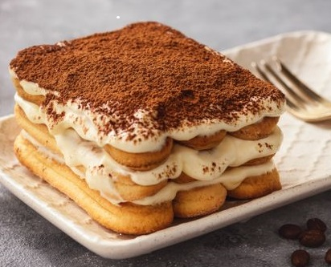

Rocket Food
Accueil
Recettes
Matériel
Nos différentes recettes :
Nos entrées
Quiche lorraine
Timbales de jeanne
Encornets de mediterranée
Roulé de saumon fumé
L'oeuf de poule cuit nacré
Petits pois rafraichis en soupe glacée
Nos plats
Burger
Risotto à la pomme
Maki inversé
Lasagnes
Risotto asperges vertes girolles parmesan
Chaud froid de choufleur et saint jacques a cru
Nos desserts

Tiramisu
Gateau au chocolat
Buche chocolat framboise
Churros
Macarons kallisté (miel et agrumes)
Un Saint-Honoré